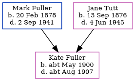

Kate Rosaline Fuller cMay 1900 - c1907
[ Home ] | [ Calendar ] | [ Surnames Index ] | [ Errors ] | [ Family History ]The child of Mark Fuller (a general labourer) and Jane Tutt (a general servant), Kate Fuller, the second cousin once-removed on the father's side of Nigel Horne, was born in Thanet, Kent, England c. May 19001,2.
She died in Thanet c. Aug 19072.
Parents
- Mark Anthony was born on 20 Feb 1878
- Jane Eliza Caroline was born on 13 Sept 1876
Citations
- England & Wales births 1837-2006 - Findmypast
- England & Wales deaths 1837-2007 - Findmypast
Media
England & Wales deaths 1837-2007 - BMD/D/1907/3/AZ/000104/142
England & Wales births 1837-2006 - BMD/B/1900/2/AZ/000215/306
Family Tree
Map
Generated by ged2site. Last updated on Jul 3, 2024
Known Issues
Parent Mark is listed in the residence for 1903, but this child is not